1.2 Clima democrático en el aula
En esta sección se presentarán los resultados de una serie de preguntas referidas a la formación ciudadana de los estudiantes. En el análisis de estas preguntas se compararan las respuestas de los docentes, los estudiantes y los apoderados.
1.2.1 Importancia de distintos aspectos en la formación ciudadana
La mayoría de los docentes, estudiantes y apoderados cree que el respeto y la amabilidad en las relaciones con los demás son un aspecto muy importante en la formación ciudadana de los estudiantes. Más específicamente, el 96.1% de los docentes, el 57% de los estudiantes y el 85.6% de los apoderados creen que es muy importante. En relación a las alternativas nada importante y algo importante cabe destacar que ninguno de los docentes optó por esas respuestas y que ninguno de los apoderados declaró que es un aspecto nada importante.
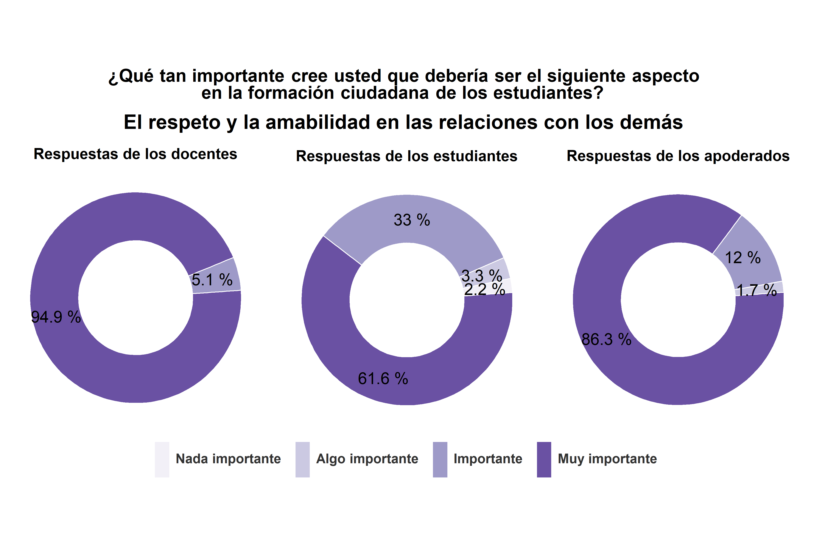
La mayoría de los docentes y apoderados considera que los valores democráticos de deliberación, tolerancia y compromiso con el bien común son un aspecto muy importante en la formación ciudadana de los estudiantes. La opinión de los docentes es más homogénea que la de los estudiantes y la de los apoderados, ya que la totalidad de los profesores declaró que es un aspecto importante o muy importante. En cambio, si bien la mayor parte de los estudiantes y apoderados cree que es un aspecto muy importante (el 46.5% y el 71%, respectivamente), en ambos grupos algunas personas declararon que es nada importante o algo importante.
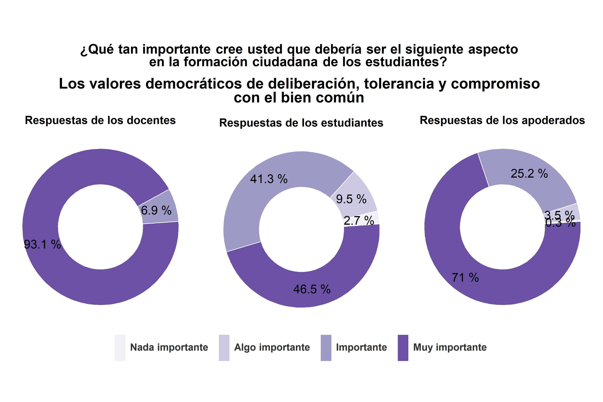
La mayoría de los docentes piensa que valorar la participación electoral es un aspecto muy importante en la formación ciudadana de los estudiantes. De hecho, todos los docentes declararon que es un aspecto importante o muy importante. Las opiniones de los estudiantes y apoderados fueron más variadas. Si bien la mayor parte de las respuestas de los estudiantes y de los apoderados se concentraron en las categorías importante (un 45.3% y un 34%, respectivamente) y muy importante, un 21.2% de los estudiantes y un 17.5% de los apoderados señaló que es un aspecto nada importante o algo importante.
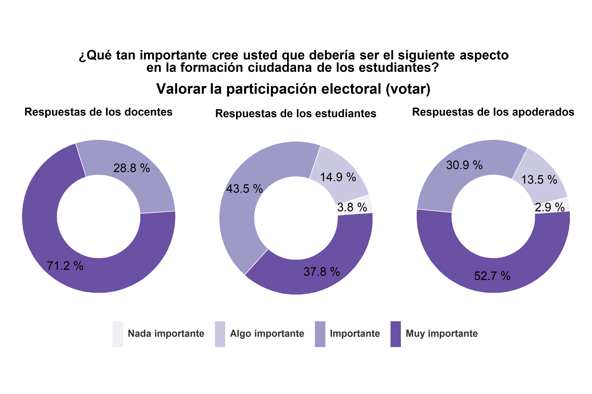
La mayoría de los docentes y estudiantes cree que participar de movimientos sociales es un aspecto importante o muy importante en la formación ciudadana de los estudiantes, mientras que la mayoría de los apoderados cree que es un aspecto nada importante o algo importante. Los docentes son quienes más valoran la importancia de este aspecto en la formación ciudadana, el 51% declaro que es importante y el 40.2% que es muy importante. La mayor parte de los estudiantes piensa que es un aspecto importante (un 40.6%) o muy importante (un 22.2%), pero hay un gran grupo de estudiantes que cree que es un aspecto algo importante (29.2%) o nada importante (un 8%). La mayor parte de los apoderados cree que es un aspecto algo importante (un 31.2%) o nada importante (un 29.8%), pero hay un gran grupo de apoderados que piensa que es importante (un 18.4%) o muy importante (un 20.7%).
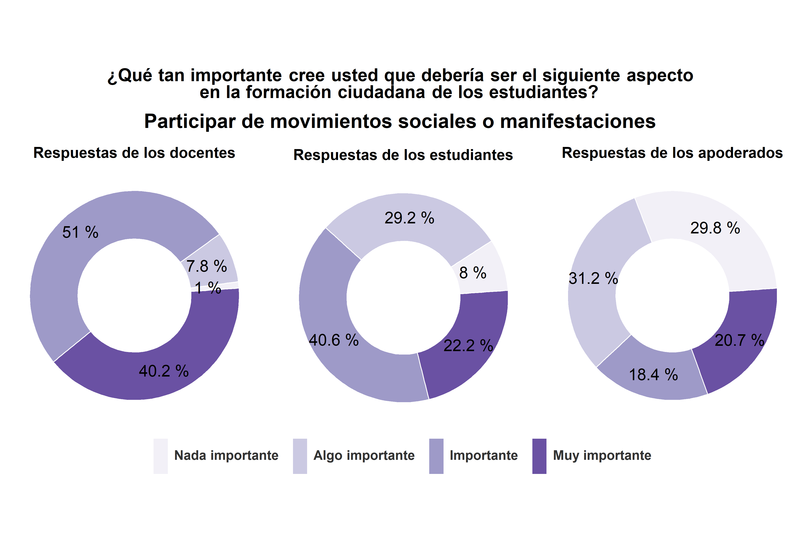
La mayoría de los docentes y apoderados piensa que el respeto y cumplimiento de la ley es un aspecto muy importante en la formación ciudadana de los estudiantes (un 64.7% y un 67.2%, respectivamente). La mayor parte de los estudiantes declaro que es un aspecto importante (un 48.1%) o muy importante (un 38%).
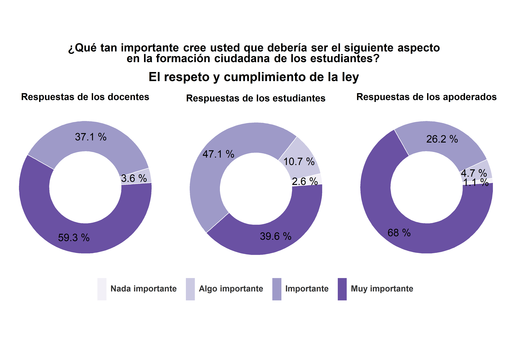
Las respuestas de los estudiantes y apoderados son bastante similares. La mayoría de las personas de ambos grupos cree que el aspecto que debería ser más importante en la formación ciudadana es el respeto y la amabilidad en las relaciones con los demás (opción seleccionada por el 60.2% de los estudiantes y el 68.8% de los apoderados). Este aspecto también fue destacado por un gran grupo de docentes (un 33.7%), pero la mayoría de los docentes declaro que el aspecto que debería ser más importante en la formación ciudadana corresponde a los valores democráticos de deliberación, tolerancia y compromiso con el bien común (el 53.7%).
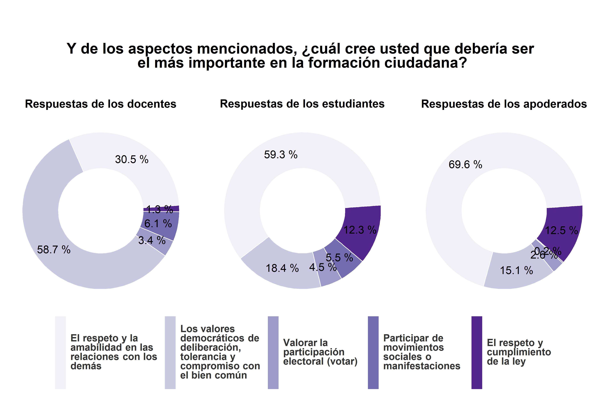
1.2.2 Quién juega el rol más importante en distintos aspectos de la formación ciudadana
La mayoría de los estudiantes y de los apoderados cree que la familia es quien juega de hecho el rol más importante en la enseñanza del respeto y la amabilidad en las relaciones con los demás (el 78.2% y el 92.1%, respectivamente). Mientras que la mayoría de los docentes piensa que son los profesores quienes juegan de hecho el rol más importante en la enseñanza de este aspecto de la formación ciudadana (el 51.5%). No obstante, hay una gran proporción de docentes que opina que es la familia quien juega el rol más importante en este aspecto (el 41.6%).
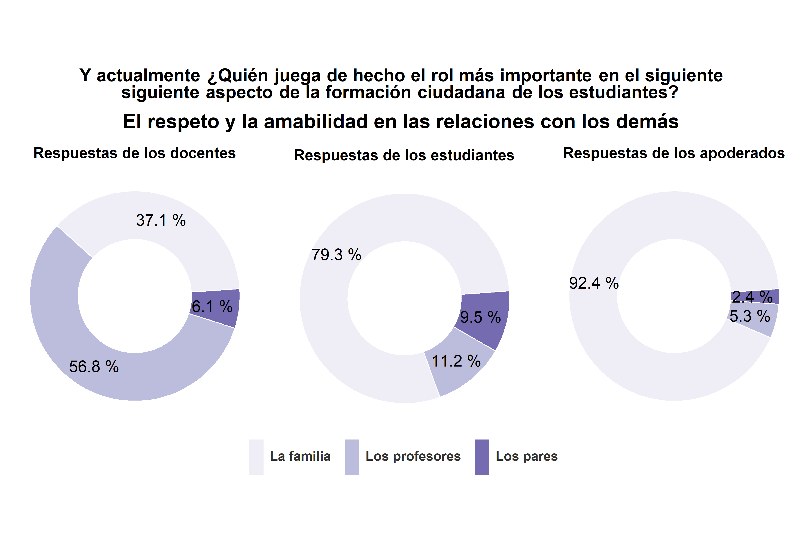
La mayoría de los estudiantes y de los apoderados piensa que es la familia quien juega de hecho el rol más importante en la enseñanza de los valores democráticos de deliberación, tolerancia y compromiso con el bien común (el 51.4% y el 69.9%, respectivamente). Mientras que la mayoría de los docentes cree que son los profesores quienes juegan de hecho el rol más importante en la enseñanza de este aspecto de la formación ciudadana (el 88.1%). Igualmente, cabe destacar que una gran proporción de estudiantes opina que son los profesores quienes juegan de hecho el rol más importante en este aspecto (el 41.3%).
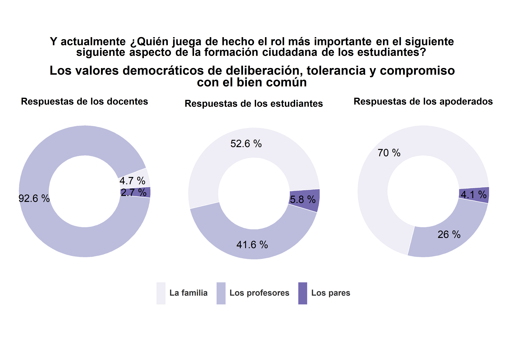
La mayoría de los docentes opina que son los profesores quienes juegan de hecho el rol más importante en la enseñanza de valorar la participación electoral (el 88%). Mientras que la mayoría de los apoderados piensa que es la familia quien juega de hecho el rol más importante en la enseñanza de este aspecto de la formación ciudadana (el 65.8%). La opinión de los estudiantes es más heterogénea. El 46.9% de los estudiantes cree que es la familia quien juega el rol más importante en la enseñanza de este aspecto y el 44.9% de los estudiantes cree que son los profesores.
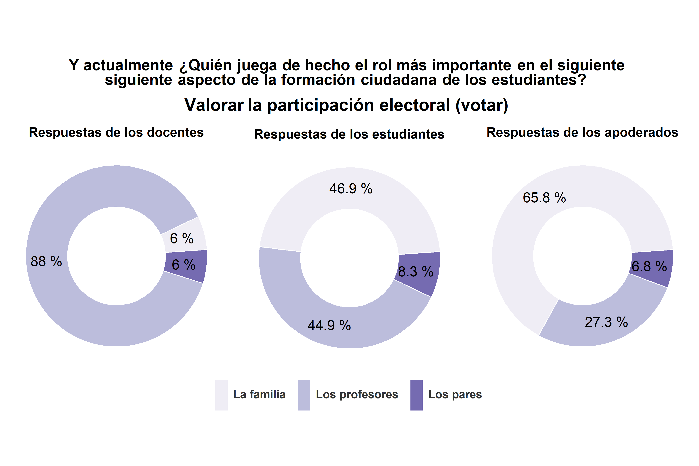
En ninguno de los tres grupos más de un 50% de las respuestas se concentra en una alternativa en particular. El 45% de los docentes cree que son los pares quienes juegan de hecho el rol más importante en la enseñanza de participar en movimientos sociales y el 39% de los docentes cree que son los profesores. La opinión de los estudiantes está distribuida de forma equitativa entre las tres alternativas. Un 33.4% de los estudiantes piensa que la familia es quien juega el rol más importante en este aspecto, el 33.4% piensa que son los pares y el 33.2% piensa que son los profesores. En relación a las respuestas de los apoderados, un 49.8% opina que es la familia quien juega de hecho el rol más importante en la enseñanza de este aspecto, un 23.6% opina que son los profesores y un 26.7% opina que son los pares.
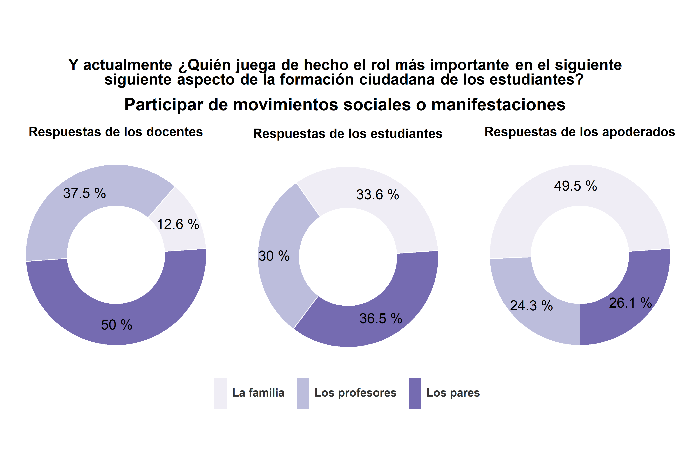
La mayoría de los estudiantes y de los apoderados piensa que es la familia quien juega de hecho el rol más importante en la enseñanza del respeto y cumplimiento de la ley (el 62.2% y el 78.2%, respectivamente). Mientras que la mayoría de los docentes cree que son los profesores quienes juegan de hecho el rol más importante en la enseñanza de este aspecto de la formación ciudadana (el 67%).
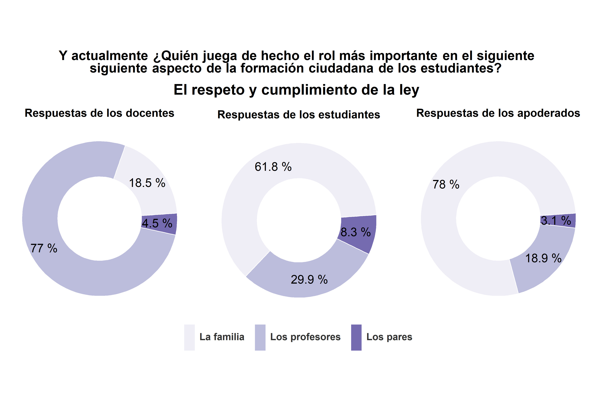